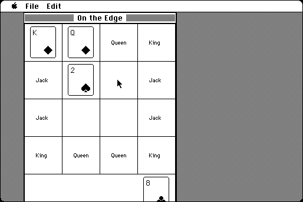

Download
ontheedge.zip (20K) On the Edge 3.1 repackaged into a zipped hfs disk image and checksum file. The disk image can be mounted with Mini vMac.
ontheedge.sit.hqx (25K) On the Edge 3.1 in the original format.
copyright: John Stiles
mod date: Feb 8, 1995
license: shareware
last known url
(gone)
A solitaire card game. The object is to place "all face cards (Kings, Queens, and Jacks) in their designated squares on the edge of the playing grid." The screen of a Macintosh Plus is too small for this game - the score box can't be seen, but the game is still playable.

If you find these downloads useful, please consider helping the Gryphel Project, which hosts them.
Here are the md5 checksums for the downloads, signed with Gryphel Key 5:
--------- GRY SIGNED TEXT --------- cc9a4ebd8542fca527cfa13d4ee045c6 ontheedge.zip a039af4c315b55e82a9dda4711ae62c7 ontheedge.sit.hqx ------- BEGIN GRY SIGNATURE ------- Gry/4Xa8CFcUzxdN/EZNKkt2+a5cNgPu1jzEeWhyHa4YqlXwi+Fnmk8IyoBJooBU udCbiaNmBoYJzpWsgO1KvJtCNDOvglERxmq/qTqB8bEO7iUIeWJl+BnfCm6EjgL5 sZ2w3znl6wYG0KEQPCZw2RueMU58NvUCso72WhUa8sqcS0kVZM3UHO69k/cfioxT -------- END GRY SIGNATURE --------